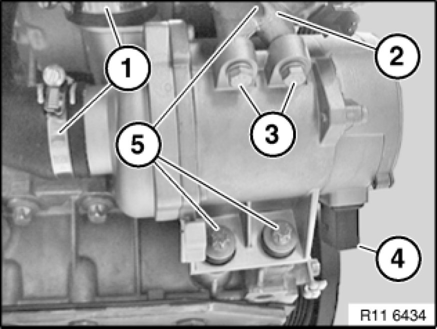

Removing and Installing/Replacing Water (Coolant) Pump (E83/N52K)
11 51 000 - Removing and installing/replacing water pump (N52K)

Warning!
Danger of scalding!
Only perform this work after engine has cooled down.

Recycling:
Catch and dispose of drained coolant in a suitable container.
Observe country-specific waste-disposal regulations.

Important!
If a water pump that has already been operated is reused, it must be filled with coolant immediately after removal.
Mixture ratio, water: coolant = 1 : 1
Protect plug connections against coolant and contamination.
Cover plug connections with suitable materials.
Important!
Aluminium-magnesium materials.
No steel screws/bolts may be used due to the threat of electrochemical corrosion.
A magnesium crankcase requires aluminium screws/bolts exclusively.
Aluminium screws/bolts must be replaced each time they are released.
Aluminium screws/bolts are permitted with and without
color coding (blue).
For reliable identification:
Aluminium screws/bolts are not magnetic.
Jointing torque and angle of rotation must be observed without fail (risk of damage).

Necessary preliminary tasks:
- Remove coolant thermostat Service and Repair

Unfasten hose clip (1).
Tightening torque 11 53 5AZ [1][2]11 53 Coolant Thermostat with Connections.
Remove coolant hose.
Unfasten hose clip (2).
Tightening torque 11 53 3AZ [1][2]11 53 Coolant Thermostat with Connections.
Remove coolant hose.
Disconnect plug connection (3).
Release screws (4).
Tightening torque 11 51 1AZ [1][2]11 51 Electric Water Pump with Drive.
Installation Note:
Replace aluminium screws.
Remove electric water pump (x) via x.
Installation Note:
If the electric water pump is reused, it must be rotated one turn due to the breakaway torque at the blade wheels.

Assemble engine.
Venting instructions 17 00 039 Venting Cooling System and Checking For Leaks must be observed without fail.